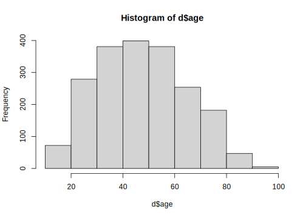
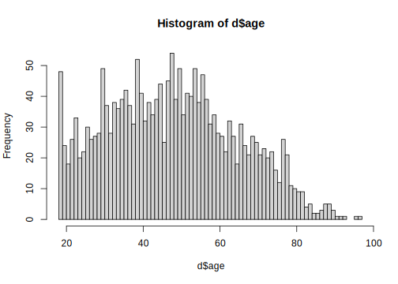
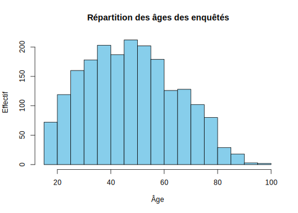
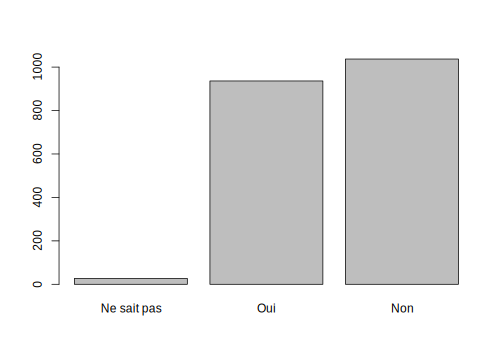
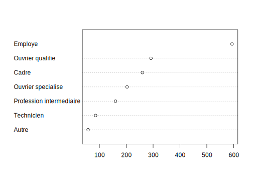
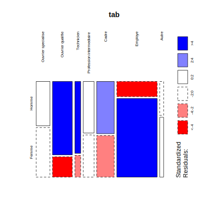
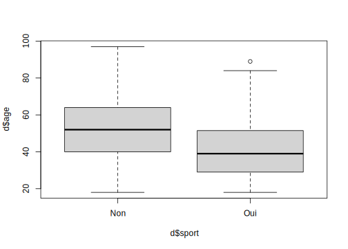
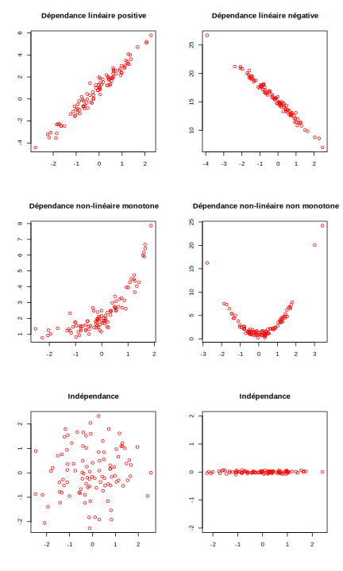
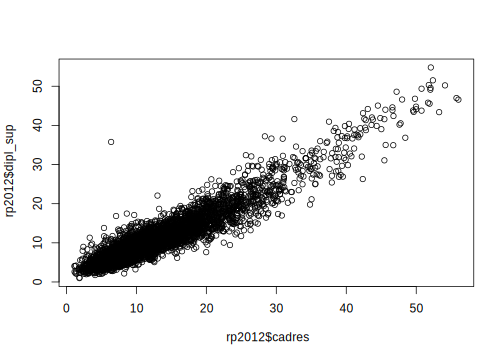

1 Introduction à R
1.1 Objectifs Labo 1
Après avoir complété cet exercice de laboratoire, vous pourrez : - Ouvrir des fichiers de données R déjà existants - Importer des ensembles de données rectangulaires - Exporter des donnes de R vers un fichier texte - Vérifier si les données ont été correctement importées - Examiner la distribution des observations d’une variable - Examiner visuellement et tester la normalité d’une variable - Calculer des statistiques descriptives d’une variable - Effectuer des transformations de données
1.1.1 Paquets et données requises pour le labo
Ce laboratoire nécessite:
- les paquets R:
- questionr
- ggplot2
- les fichiers de données
- ErablesGatineau.csv
- sturgeon.csv
1.2 Premier pas avec R
Une fois R et RStudio installés sur votre machine, nous n’allons pas lancer R mais plutôt RStudio.
RStudio n’est pas à proprement parler une interface graphique qui permettrait d’utiliser R de manière “classique” via la souris, des menus et des boîtes de dialogue. Il s’agit plutôt de ce qu’on appelle un Environnement de développement intégré (IDE) qui facilite l’utilisation de R et le développement de scripts (voir section ??).
1.2.1 La console
1.2.1.1 L’invite de commandes
Au premier lancement de RStudio, l’écran principal est découpé en trois grandes zones :

Interface de Rstudio
La zone de gauche se nomme Console. À son démarrage, RStudio a lancé une nouvelle session de R et c’est dans cette fenêtre que nous allons pouvoir interagir avec lui.
La Console doit normalement afficher un texte de bienvenue ressemblant à ceci :
R version 4.0.0 (2020-04-24) -- "Arbor Day"
Copyright (C) 2020 The R Foundation for Statistical Computing
Platform: x86_64-pc-linux-gnu (64-bit)
R est un logiciel libre livré sans AUCUNE GARANTIE.
Vous pouvez le redistribuer sous certaines conditions.
Tapez 'license()' ou 'licence()' pour plus de détails.
R est un projet collaboratif avec de nombreux contributeurs.
Tapez 'contributors()' pour plus d'information et
'citation()' pour la façon de le citer dans les publications.
Tapez 'demo()' pour des démonstrations, 'help()' pour l'aide
en ligne ou 'help.start()' pour obtenir l'aide au format HTML.
Tapez 'q()' pour quitter R.suivi d’une ligne commençant par le caractère > et sur laquelle devrait se trouver votre curseur. Cette ligne est appelée l’invite de commande (ou prompt en anglais). Elle signifie que R est disponible et en attente de votre prochaine commande.
Nous pouvons tout de suite lui fournir une première commande, en saisissant le texte suivant puis en appuyant sur Entrée :
## [1] 4R nous répond immédiatement, et nous pouvons constater avec soulagement qu’il sait faire des additions à un chiffre1. On peut donc continuer avec d’autres opérations :
## [1] -2## [1] 48## [1] -3.333333## [1] 25Cette dernière opération utilise le symbole ^ qui représente l’opération puissance. 5^2 signifie donc “5 au carré”, soit 25.
1.2.1.2 Précisions concernant la saisie des commandes
Lorsqu’on saisit une commande, les espaces autour des opérateurs n’ont pas d’importance. Les trois commandes suivantes sont donc équivalentes, mais on privilégie en général la deuxième pour des raisons de lisibilité du code.
Quand vous êtes dans la console, vous pouvez utiliser les flèches vers le haut et vers le bas pour naviguer dans l’historique des commandes que vous avez tapées précédemment. Vous pouvez à tout moment modifier la commande affichée, et l’exécuter en appuyant sur Entrée.
Enfin, il peut arriver qu’on saisisse une commande de manière incomplète : oubli d’une parenthèse, faute de frappe, etc. Dans ce cas, R remplace l’invite de commande habituel par un signe + :
Cela signifie qu’il “attend la suite”. On peut alors soit compléter la commande sur cette nouvelle ligne et appuyer sur Entrée, soit, si on est perdu, tout annuler et revenir à l’invite de commandes normal en appuyant sur Esc ou Échap.
1.2.2 Objets
1.2.2.1 Objets simples
Faire des calculs c’est bien, mais il serait intéressant de pouvoir stocker un résultat quelque part pour pouvoir le réutiliser ultérieurement sans avoir à faire du copier/coller.
Pour conserver le résultat d’une opération, on peut le stocker dans un objet à l’aide de l’opérateur d’assignation <-. Cette “flèche” stocke ce qu’il y a à sa droite dans un objet dont le nom est indiqué à sa gauche.
Prenons tout de suite un exemple :
Cette commande peut se lire “prend la valeur 2 et mets la dans un objet qui s’appelle x”.
Si on exécute une commande comportant juste le nom d’un objet, R affiche son contenu :
## [1] 2On voit donc que notre objet x contient bien la valeur 2.
On peut évidemment réutiliser cet objet dans d’autres opérations. R le remplacera alors par sa valeur :
## [1] 6On peut créer autant d’objets qu’on le souhaite.
## [1] 7
Les noms d’objets peuvent contenir des lettres, des chiffres, les symboles . et _. Ils ne peuvent pas commencer par un chiffre. Attention, R fait la différence entre minuscules et majuscules dans les noms d’objets, ce qui signifie que x et X seront deux objets différents, tout comme resultat et Resultat.
De manière générale, il est préférable d’éviter les majuscules (pour les risques d’erreur) et les caractères accentués (pour des questions d’encodage) dans les noms d’objets.
De même, il faut essayer de trouver un équilibre entre clarté du nom (comprendre à quoi sert l’objet, ce qu’il contient) et sa longueur. Par exemple, on préfèrera comme nom d’objet taille_conj1 à taille_du_conjoint_numero_1 (trop long) ou à t1 (pas assez explicite).
Quand on assigne une nouvelle valeur à un objet déjà existant, la valeur précédente est perdue. Les objets n’ont pas de mémoire.
## [1] 5De la même manière, assigner un objet à un autre ne crée pas de “lien” entre les deux. Cela copie juste la valeur de l’objet de droite dans celui de gauche :
## [1] 3## [1] 3On le verra, les objets peuvent contenir tout un tas d’informations. Jusqu’ici on n’a stocké que des nombres, mais ils peuvent aussi contenir des chaînes de caractères (du texte), qu’on délimite avec des guillemets simples ou doubles (' ou ") :
## [1] "Chihuahua"1.2.3 Vecteurs
Imaginons maintenant qu’on a demandé la taille en centimètres de 5 personnes et qu’on souhaite calculer leur taille moyenne. On pourrait créer autant d’objets que de tailles et faire l’opération mathématique qui va bien :
taille1 <- 156
taille2 <- 164
taille3 <- 197
taille4 <- 147
taille5 <- 173
(taille1 + taille2 + taille3 + taille4 + taille5) / 5## [1] 167.4Cette manière de faire n’est évidemment pas pratique du tout. On va plutôt stocker l’ensemble de nos tailles dans un seul objet, de type vecteur, avec la syntaxe suivante :
Si on affiche le contenu de cet objet, on voit qu’il contient bien l’ensemble des tailles saisies :
## [1] 156 164 197 147 173Un vecteur dans R est un objet qui peut contenir plusieurs informations du même type, potentiellement en très grand nombre.
L’avantage d’un vecteur est que lorsqu’on lui applique une opération, celle-ci s’applique à toutes les valeurs qu’il contient. Ainsi, si on veut la taille en mètres plutôt qu’en centimètres, on peut faire :
## [1] 1.56 1.64 1.97 1.47 1.73Cela fonctionne pour toutes les opérations de base :
## [1] 166 174 207 157 183## [1] 24336 26896 38809 21609 29929Imaginons maintenant qu’on a aussi demandé aux cinq mêmes personnes leur poids en kilos. On peut alors créer un deuxième vecteur :
On peut alors effectuer des calculs utilisant nos deux vecteurs tailles et poids. On peut par exemple calculer l’indice de masse corporelle (IMC) de chacun de nos enquêtés en divisant leur poids en kilo par leur taille en mètre au carré :
## [1] 18.49112 21.93635 28.34394 20.36189 29.40292Un vecteur peut contenir des nombres, mais il peut aussi contenir du texte. Imaginons qu’on a demandé aux 5 mêmes personnes leur niveau de diplôme : on peut regrouper l’information dans un vecteur de chaînes de caractères. Une chaîne de caractère contient du texte libre, délimité par des guillemets simples ou doubles :
## [1] "CAP" "Bac" "Bac+2" "CAP" "Bac+3"L’opérateur :, lui, permet de générer rapidement un vecteur comprenant tous les nombres entre deux valeurs, opération assez courante sous R :
## [1] 1 2 3 4 5 6 7 8 9 10Enfin, notons qu’on peut accéder à un élément particulier d’un vecteur en faisant suivre le nom du vecteur de crochets contenant le numéro de l’élément désiré. Par exemple :
## [1] "Bac"Cette opération, qui utilise l’opérateur [], permet donc la sélection d’éléments d’un vecteur.
Dernière remarque, si on affiche dans la console un vecteur avec beaucoup d’éléments, ceux-ci seront répartis sur plusieurs lignes. Par exemple, si on a un vecteur de 50 nombres on peut obtenir quelque chose comme :
[1] 294 425 339 914 114 896 716 648 915 587 181 926 489
[14] 848 583 182 662 888 417 133 146 322 400 698 506 944
[27] 237 324 333 443 487 658 793 288 897 588 697 439 697
[40] 914 694 126 969 744 927 337 439 226 704 635On remarque que R ajoute systématiquement un nombre entre crochets au début de chaque ligne : il s’agit en fait de la position du premier élément de la ligne dans le vecteur. Ainsi, le 848 de la deuxième ligne est le 14e élément du vecteur, le 914 de la dernière ligne est le 40e, etc.
Ceci explique le [1] qu’on obtient quand on affiche un simple nombre2 :
[1] 41.2.4 Fonctions
1.2.4.1 Principe
Nous savons désormais effectuer des opérations arithmétiques de base sur des nombres et des vecteurs, et stocker des valeurs dans des objets pour pouvoir les réutiliser plus tard.
Pour aller plus loin, nous devons aborder les fonctions qui sont, avec les objets, un deuxième concept de base de R. On utilise des fonctions pour effectuer des calculs, obtenir des résultats et accomplir des actions.
Formellement, une fonction a un nom, elle prend en entrée entre parenthèses un ou plusieurs arguments (ou paramètres), et retourne un résultat.
Prenons tout de suite un exemple. Si on veut connaître le nombre d’éléments du vecteur tailles que nous avons construit précédemment, on peut utiliser la fonction length, de cette manière :
## [1] 5Ici, length est le nom de la fonction, on l’appelle en lui passant un argument entre parenthèses (en l’occurrence notre vecteur tailles), et elle nous renvoie un résultat, à savoir le nombre d’éléments du vecteur passé en paramètre.
Autre exemple, les fonctions min et max retournent respectivement les valeurs minimales et maximales d’un vecteur de nombres :
## [1] 147## [1] 197La fonction mean calcule et retourne la moyenne d’un vecteur de nombres :
## [1] 167.4La fonction sum retourne la somme de tous les éléments du vecteur :
## [1] 837Jusqu’à présent on n’a vu que des fonctions qui calculent et retournent un unique nombre. Mais une fonction peut renvoyer d’autres types de résultats. Par exemple, la fonction range (étendue) renvoie un vecteur de deux nombres, le minimum et le maximum :
## [1] 147 197Ou encore, la fonction unique, qui supprime toutes les valeurs en double dans un vecteur, qu’il s’agisse de nombres ou de chaînes de caractères :
## [1] "CAP" "Bac" "Bac+2" "Bac+3"1.2.4.2 Arguments
Une fonction peut prendre plusieurs arguments, dans ce cas on les indique toujours entre parenthèses, séparés par des virgules.
On a déjà rencontré un exemple de fonction acceptant plusieurs arguments : la fonction c, qui combine l’ensemble de ses arguments en un vecteur3 :
Ici, c est appelée en lui passant cinq arguments, les cinq tailles séparées par des virgules, et elle renvoie un vecteur numérique regroupant ces cinq valeurs.
Supposons maintenant que dans notre vecteur tailles nous avons une valeur manquante (une personne a refusé de répondre, ou notre mètre mesureur était en panne). On symbolise celle-ci dans R avec le code interne NA :
## [1] 156 164 197 NA 173
NA est l’abbréviation de Not available, non disponible. Cette valeur particulière peut être utilisée pour indiquer une valeur manquante, qu’il s’agisse d’un nombre, d’une chaîne de caractères, etc.
Si je calcule maintenant la taille moyenne à l’aide de la fonction mean, j’obtiens :
## [1] NAEn effet, R considère par défaut qu’il ne peut pas calculer la moyenne si une des valeurs n’est pas disponible. Il considère alors que cette moyenne est elle-même “non disponible” et renvoie donc comme résultat NA.
On peut cependant indiquer à mean d’effectuer le calcul en ignorant les valeurs manquantes. Ceci se fait en ajoutant un argument supplémentaire, nommé na.rm (abbréviation de NA remove, “enlever les NA”), et de lui attribuer la valeur TRUE (code interne de R signifiant vrai) :
## [1] 172.5Positionner le paramètre na.rm à TRUE indique à la fonction mean de ne pas tenir compte des valeurs manquantes dans le calcul.
Si on ne dit rien à la fonction mean, cet argument a une valeur par défaut, en l’occurrence FALSE (faux), qui fait qu’il ne supprime pas les valeurs manquantes. Les deux commandes suivantes sont donc rigoureusement équivalentes :
## [1] NA## [1] NAnom = valeur, on parle d’argument nommé.
1.2.4.3 Aide sur une fonction
Il est fréquent de ne pas savoir (ou d’avoir oublié) quels sont les arguments d’une fonction, ou comment ils se nomment. On peut à tout moment faire appel à l’aide intégrée à R en passant le nom de la fonction (entre guillemets) à la fonction help :
On peut aussi utiliser le raccourci ?mean.
Ces deux commandes affichent une page (en anglais) décrivant la fonction, ses paramètres, son résultat, le tout accompagné de diverses notes, références et exemples. Ces pages d’aide contiennent à peu près tout ce que vous pourrez chercher à savoir, mais elles ne sont pas toujours d’une lecture aisée.
Dans RStudio, les pages d’aide en ligne s’ouvriront par défaut dans la zone en bas à droite, sous l’onglet Help. Un clic sur l’icône en forme de maison vous affichera la page d’accueil de l’aide.
1.2.5 Regrouper ses commandes dans des scripts
Jusqu’ici on a utilisé R de manière “interactive”, en saisissant des commandes directement dans la console. Ça n’est cependant pas la manière dont on va utiliser R au quotidien, pour une raison simple : lorsque R redémarre, tout ce qui a été effectué dans la console est perdu.
Plutôt que de saisir nos commandes dans la console, on va donc les regrouper dans des scripts (de simples fichiers texte), qui vont garder une trace de toutes les opérations effectuées, et ce sont ces scripts, sauvegardés régulièrement, qui seront le “coeur” de notre travail. C’est en rouvrant les scripts et en réexécutant les commandes qu’ils contiennent qu’on pourra “reproduire” les données, leur traitement, les analyses et leurs résultats.
Pour créer un script, il suffit de sélectionner le menu File, puis New file et R script. Une quatrième zone apparaît alors en haut à gauche de l’interface de RStudio. On peut enregistrer notre script à tout moment dans un fichier avec l’extension .R, en cliquant sur l’icône de disquette ou en choissant File puis Save.
Un script est un fichier texte brut, qui s’édite de la manière habituelle. À la différence de la console, quand on appuie sur Entrée, cela n’exécute pas la commande en cours mais insère un saut de ligne (comme on pouvait s’y attendre).
Pour exécuter une commande saisie dans un script, il suffit de positionner le curseur sur la ligne de la commande en question, et de cliquer sur le bouton Run dans la barre d’outils juste au-dessus de la zone d’édition du script. On peut aussi utiliser le raccourci clavier Ctrl + Entrée (Cmd + Entrée sous Mac). On peut enfin sélectionner plusieurs lignes avec la souris ou le clavier et cliquer sur Run (ou utiliser le raccourci clavier), et l’ensemble des lignes est exécuté d’un coup.
Au final, un script pourra ressembler à quelque chose comme ça :
tailles <- c(156, 164, 197, 147, 173)
poids <- c(45, 59, 110, 44, 88)
mean(tailles)
mean(poids)
imc <- poids / (tailles / 100) ^ 2
min(imc)
max(imc)1.2.5.1 Commentaires
Les commentaires sont un élément très important d’un script. Il s’agit de texte libre, ignoré par R, et qui permet de décrire les étapes du script, sa logique, les raisons pour lesquelles on a procédé de telle ou telle manière… Il est primordial de documenter ses scripts à l’aide de commentaires, car il est très facile de ne plus se retrouver dans un programme qu’on a produit soi-même, même après une courte interruption.
Pour ajouter un commentaire, il suffit de le faire précéder d’un ou plusieurs symboles #. En effet, dès que R rencontre ce caractère, il ignore tout ce qui se trouve derrière, jussqu’à la fin de la ligne.
On peut donc documenter le script précédent :
# Saisie des tailles et poids des enquêtés
tailles <- c(156, 164, 197, 147, 173)
poids <- c(45, 59, 110, 44, 88)
# Calcul des tailles et poids moyens
mean(tailles)
mean(poids)
# Calcul de l'IMC (poids en kilo divisé par les tailles en mètre au carré)
imc <- poids / (tailles / 100) ^ 2
# Valeurs extrêmes de l'IMC
min(imc)
max(imc)1.2.6 Installer et charger des extensions (packages)
R étant un logiciel libre, il bénéficie d’un développement communautaire riche et dynamique. L’installation de base de R permet de faire énormément de choses, mais le langage dispose en plus d’un système d’extensions permettant d’ajouter facilement de nouvelles fonctionnalités. La plupart des extensions sont développées et maintenues par la communauté des utilisateurs de R, et diffusées via un réseau de serveurs nommé CRAN (Comprehensive R Archive Network).
Pour installer une extension, si on dispose d’une connexion Internet, on peut utiliser le bouton Install de l’onglet Packages de RStudio.

Installer une extension
Il suffit alors d’indiquer le nom de l’extension dans le champ Package et de cliquer sur Install.

Installation d’une extension
On peut aussi installer des extensions en utilisant la fonction install.packages() directement dans la console. Par exemple, pour installer le package questionr on peut exécuter la commande :
Installer une extension via l’une des deux méthodes précédentes va télécharger l’ensemble des fichiers nécessaires depuis l’une des machines du CRAN, puis installer tout ça sur le disque dur de votre ordinateur. Vous n’avez besoin de le faire qu’une fois, comme vous le faites pour installer un programme sur votre Mac ou PC.
Une fois l’extension installée, il faut la “charger” avant de pouvoir utiliser les fonctions qu’elle propose. Ceci se fait avec la fonction library. Par exemple, pour pouvoir utiliser les fonctions de questionr, vous devrez exécuter la commande suivante :
Ainsi, bien souvent, on regroupe en début de script toute une série d’appels à library qui permettent de charger tous les packages utilisés dans le script. Quelque chose comme :
Si vous essayez d’exécuter une fonction d’une extension et que vous obtenez le message d’erreur impossible de trouver la fonction, c’est certainement parce que vous n’avez pas exécuté la commande library correspondante.
1.2.7 Exercices
Exercice 1
Construire le vecteur x suivant :
## [1] 120 134 256 12Utiliser ce vecteur x pour générer les deux vecteurs suivants :
## [1] 220 234 356 112## [1] 240 268 512 24Exercice 2
On a demandé à 4 ménages le revenu des deux conjoints, et le nombre de personnes du ménage :
conjoint1 <- c(1200, 1180, 1750, 2100)
conjoint2 <- c(1450, 1870, 1690, 0)
nb_personnes <- c(4, 2, 3, 2)Calculer le revenu total de chaque ménage, puis diviser par le nombre de personnes pour obtenir le revenu par personne de chaque ménage.
Exercice 3
Dans l’exercice précédent, calculer le revenu minimum et maximum parmi ceux du premier conjoint.
Recommencer avec les revenus suivants, parmi lesquels l’un des enquetés n’a pas voulu répondre :
Exercice 4
Les deux vecteurs suivants représentent les précipitations (en mm) et la température (en °C) moyennes sur la ville de Lyon, pour chaque mois de l’année, entre 1981 et 2010 :
temperature <- c(3.4, 4.8, 8.4, 11.4, 15.8, 19.4, 22.2, 21.6, 17.6, 13.4, 7.6, 4.4)
precipitations <- c(47.2, 44.1, 50.4, 74.9, 90.8, 75.6, 63.7, 62, 87.5, 98.6, 81.9, 55.2)Calculer la température moyenne sur l’année.
Calculer la quantité totale de précipitations sur l’année.
À quoi correspond et comment peut-on interpréter le résultat de la fonction suivante ? Vous pouvez vous aider de la page d’aide de la fonction si nécessaire.
## [1] 47.2 91.3 141.7 216.6 307.4 383.0 446.7 508.7 596.2 694.8 776.7 831.9Même question pour :
## [1] 1.4 3.6 3.0 4.4 3.6 2.8 -0.6 -4.0 -4.2 -5.8 -3.2cumsum(precipitations) correspond à la somme cumulée des précipitations sur l’année. Par exemple, la 6e valeur du vecteur résultat correspond au total de précipitations de janvier à juin.
diff(temperature) correspond à la différence de température d’un mois sur l’autre. Par exemple, la 2e valeur de ce vecteur correspond à l’écart de température entre le mois de février et le mois de janvier.
Exercice 5
On a relevé les notes en maths, anglais et sport d’une classe de 6 élèves et on a stocké ces données dans trois vecteurs :
maths <- c(12, 16, 8, 18, 6, 10)
anglais <- c(14, 9, 13, 15, 17, 11)
sport <- c(18, 11, 14, 10, 8, 12)Calculer la moyenne des élèves de la classe en anglais.
Calculer la moyenne générale de chaque élève.
Essayez de comprendre le résultat des deux fonctions suivantes (vous pouvez vous aider de la page d’aide de ces fonctions) :
## [1] 12 9 8 10 6 10## [1] 18 16 14 18 17 12pmin et pmax renvoient les minimum et maximum “parallèles” des trois vecteurs passés en argument. Ainsi, pmin renvoie pour chaque élève la note minimale dans les trois matières, et pmax la note maximale.
1.3 Premier travail avec des données
1.3.1 Jeu de données d’exemple
Dans cette partie nous allons (enfin) travailler sur des “vraies” données, et utiliser un jeu de données présent dans l’extension questionr. Nous devons donc avant toute chose installer cette extension.
Pour installer ce package, deux possibilités :
- Dans l’onglet Packages de la zone de l’écran en bas à droite, cliquez sur le bouton Install. Dans le dialogue qui s’ouvre, entrez “questionr” dans le champ Packages puis cliquez sur Install.
- Saisissez directement la commande suivante dans la console :
install.packages("questionr")
Dans les deux cas, tout un tas de messages devraient s’afficher dans la console. Attendez que l’invite de commandes > apparaisse à nouveau.
Pour plus d’informations sur les extensions et leur installation, voir la section 1.2.6.
Le jeu de données que nous allons utiliser est un extrait de l’enquête Histoire de vie réalisée par l’INSEE en 2003. Il contient 2000 individus et 20 variables. Pour une description plus complète et une liste des variables, voir la section ??.
Pour pouvoir utiliser ces données, il faut d’abord charger l’extension questionr (après l’avoir installée, bien entendu) :
L’utilisation de library permet de rendre “disponibles”, dans notre session R, les fonctions et jeux de données inclus dans l’extension.
Nous devons ensuite indiquer à R que nous souhaitons accéder au jeu de données à l’aide de la commande data :
Cette commande ne renvoie aucun résultat particulier (sauf en cas d’erreur), mais vous devriez voir apparaître dans l’onglet Environment de RStudio un nouvel objet nommé hdv2003 :

Onglet Environment
Cet objet est d’un type nouveau : il s’agit d’un tableau de données.
1.3.2 Tableau de données (data frame)
Un data frame (ou tableau de données, ou table) est un type d’objet R qui contient des données au format tabulaire, avec les observations en ligne et les variables en colonnes, comme dans une feuille de tableur de type LibreOffice ou Excel.
Si on se contente d’exécuter le nom de notre tableau de données :
R va, comme à son habitude, nous l’afficher dans la console, ce qui est tout sauf utile.
Une autre manière d’afficher le contenu du tableau est de cliquer sur l’icône en forme de tableau à droite du nom de l’objet dans l’onglet Environment :
View icon
Ou d’utiliser la fonction View :
Dans les deux cas votre tableau devrait s’afficher dans RStudio avec une interface de type tableur :

Interface “View”
Il est important de comprendre que l’objet hdv2003 contient l’intégralité des données du tableau.
On voit donc qu’un objet peut contenir des données de types très différents (simple nombre, texte, vecteur, tableau de données entier), et être potentiellement de très grande taille4.
Sous R, on peut importer ou créer autant de tableaux de données qu’on le souhaite, dans les limites des capacités de sa machine.
Un data frame peut être manipulé comme les autres objets vus précédemment. On peut par exemple faire :
ce qui va entraîner la copie de l’ensemble de nos données dans un nouvel objet nommé d. Ceci peut paraître parfaitement inutile mais a en fait l’avantage de fournir un objet avec un nom beaucoup plus court, ce qui diminuera la quantité de texte à saisir par la suite.
Pour résumer, comme nous avons désormais décidé de saisir nos commandes dans un script et non plus directement dans la console, les premières lignes de notre fichier de travail sur les données de l’enquête Histoire de vie pourraient donc ressembler à ceci :
## Chargement des extensions nécessaires
library(questionr)
## Jeu de données hdv2003
data(hdv2003)
d <- hdv20031.3.2.1 Structure du tableau
Un tableau étant un objet comme un autre, on peut lui appliquer des fonctions. Par exemple, nrow et ncol retournent le nombre de lignes et de colonnes du tableau :
## [1] 2000## [1] 20La fonction dim renvoie ses dimensions, donc les deux nombres précédents :
## [1] 2000 20La fonction names retourne les noms des colonnes du tableau, c’est-à-dire la liste de nos variables :
## [1] "id" "age" "sexe" "nivetud"
## [5] "poids" "occup" "qualif" "freres.soeurs"
## [9] "clso" "relig" "trav.imp" "trav.satisf"
## [13] "hard.rock" "lecture.bd" "peche.chasse" "cuisine"
## [17] "bricol" "cinema" "sport" "heures.tv"Enfin, la fonction str renvoie un descriptif plus détaillé de la structure du tableau. Elle liste les différentes variables, indique leur type 5 et affiche les premières valeurs :
## 'data.frame': 2000 obs. of 20 variables:
## $ id : int 1 2 3 4 5 6 7 8 9 10 ...
## $ age : int 28 23 59 34 71 35 60 47 20 28 ...
## $ sexe : Factor w/ 2 levels "Homme","Femme": 2 2 1 1 2 2 2 1 2 1 ...
## $ nivetud : Factor w/ 8 levels "N'a jamais fait d'etudes",..: 8 NA 3 8 3 6 3 6 NA 7 ...
## $ poids : num 2634 9738 3994 5732 4329 ...
## $ occup : Factor w/ 7 levels "Exerce une profession",..: 1 3 1 1 4 1 6 1 3 1 ...
## $ qualif : Factor w/ 7 levels "Ouvrier specialise",..: 6 NA 3 3 6 6 2 2 NA 7 ...
## $ freres.soeurs: int 8 2 2 1 0 5 1 5 4 2 ...
## $ clso : Factor w/ 3 levels "Oui","Non","Ne sait pas": 1 1 2 2 1 2 1 2 1 2 ...
## $ relig : Factor w/ 6 levels "Pratiquant regulier",..: 4 4 4 3 1 4 3 4 3 2 ...
## $ trav.imp : Factor w/ 4 levels "Le plus important",..: 4 NA 2 3 NA 1 NA 4 NA 3 ...
## $ trav.satisf : Factor w/ 3 levels "Satisfaction",..: 2 NA 3 1 NA 3 NA 2 NA 1 ...
## $ hard.rock : Factor w/ 2 levels "Non","Oui": 1 1 1 1 1 1 1 1 1 1 ...
## $ lecture.bd : Factor w/ 2 levels "Non","Oui": 1 1 1 1 1 1 1 1 1 1 ...
## $ peche.chasse : Factor w/ 2 levels "Non","Oui": 1 1 1 1 1 1 2 2 1 1 ...
## $ cuisine : Factor w/ 2 levels "Non","Oui": 2 1 1 2 1 1 2 2 1 1 ...
## $ bricol : Factor w/ 2 levels "Non","Oui": 1 1 1 2 1 1 1 2 1 1 ...
## $ cinema : Factor w/ 2 levels "Non","Oui": 1 2 1 2 1 2 1 1 2 2 ...
## $ sport : Factor w/ 2 levels "Non","Oui": 1 2 2 2 1 2 1 1 1 2 ...
## $ heures.tv : num 0 1 0 2 3 2 2.9 1 2 2 ...Sous RStudio, on peut afficher à tout moment la structure d’un objet en cliquant sur l’icône de triangle sur fond bleu à gauche du nom de l’objet dans l’onglet Environment :

Structure d’un objet
1.3.2.2 Accéder aux variables d’un tableau
Une opération très importante est l’accès aux variables du tableau (à ses colonnes) pour pouvoir les manipuler, effectuer des calculs, etc. On utilise pour cela l’opérateur $, qui permet d’accéder aux colonnes du tableau. Ainsi, si l’on tape :
## [1] Femme Femme Homme Homme Femme Femme Femme Homme Femme Homme Femme Homme
## [13] Femme Femme Femme Femme Homme Femme Homme Femme Femme Homme Femme Femme
## [25] Femme Homme Femme Homme Homme Homme Homme Homme Homme Homme Femme Femme
## [37] Homme Femme Femme Homme Femme Homme Homme Femme Femme Homme Femme Femme
## [49] Femme Femme Homme Femme Homme Femme Homme Femme Femme Femme Homme Femme
## [61] Femme Homme Homme Homme Homme Femme Homme Homme Femme Femme Homme Homme
## [73] Femme Femme Femme Femme Homme Femme Femme Femme Femme Femme Femme Homme
## [85] Homme Femme Homme Homme Homme Homme Homme Femme Homme Femme Femme Femme
## [97] Homme Homme Femme Femme Femme Homme Femme Homme Homme Femme Femme Femme
## [109] Femme Homme Homme Homme Homme Homme Femme Homme Homme Femme Homme Homme
## [121] Femme Femme Femme Homme Femme Femme Homme Femme Femme Homme Femme Homme
## [133] Femme Femme Femme Homme Homme Homme Homme Homme Homme Homme Homme Femme
## [145] Homme Homme Homme Femme Femme Femme Homme Femme Femme Femme Femme Homme
## [157] Femme Homme Homme Homme Femme Homme Femme Homme Femme Homme Homme Femme
## [169] Femme Femme Homme Femme Homme Femme Femme Femme Homme Homme Homme Femme
## [181] Homme Femme Femme Homme Homme Femme Femme Femme Femme Femme Homme Homme
## [193] Femme Homme Homme Femme Homme Femme Homme Femme
## [ reached getOption("max.print") -- omitted 1800 entries ]
## Levels: Homme FemmeR va nous afficher l’ensemble des valeurs de notre variable sexe dans la console, ce qui est à nouveau fort peu utile. Mais cela nous permet de constater que d$sexe est un vecteur de chaînes de caractères tels qu’on en a déjà rencontré précédemment.
La fonction table$colonne renvoie donc la colonne nommée colonne du tableau table, c’est-à-dire un vecteur, en général de nombres ou de chaînes de caractères.
Si on souhaite afficher seulement les premières ou dernières valeurs d’une variable, on peut utiliser les fonctions head et tail :
## [1] 28 23 59 34 71 35## [1] 52 42 50 41 46 45 46 24 24 66Le deuxième argument numérique permet d’indiquer le nombre de valeurs à afficher.
1.3.2.3 Créer une nouvelle variable
On peut aussi utiliser l’opérateur $ pour créer une nouvelle variable dans notre tableau : pour cela, il suffit de lui assigner une valeur.
Par exemple, la variable heures.tv contient le nombre d’heures passées quotidiennement devant la télé :
## [1] 0.0 1.0 0.0 2.0 3.0 2.0 2.9 1.0 2.0 2.0On peut vouloir créer une nouvelle variable dans notre tableau qui contienne la même durée mais en minutes. On va donc créer une nouvelle variables minutes.tv de la manière suivante :
On peut alors constater, soit visuellement soit dans la console, qu’une nouvelle variable (une nouvelle colonne) a bien été ajoutée au tableau :
## [1] 0 60 0 120 180 1201.3.3 Analyse univariée
On a donc désormais accès à un tableau de données d, dont les lignes sont des observations (des individus enquêtés), et les colonnes des variables (des caractéristiques de chacun de ces individus), et on sait accéder à ces variables grâce à l’opérateur $.
Si on souhaite analyser ces variables, les méthodes et fonctions utilisées seront différentes selon qu’il s’agit d’une variable quantitative (variable numérique pouvant prendre un grand nombre de valeurs : l’âge, le revenu, un pourcentage…) ou d’une variable qualitative (variable pouvant prendre un nombre limité de valeurs appelées modalités : le sexe, la profession, le dernier diplôme obtenu, etc.).
1.3.3.1 Analyser une variable quantitative
Une variable quantitative est une variable de type numérique (un nombre) qui peut prendre un grand nombre de valeurs. On en a plusieurs dans notre jeu de données, notamment l’âge (variable age) ou le nombre d’heures passées devant la télé (heures.tv).
1.3.3.1.1 Indicateurs de centralité
Caractériser une variable quantitative, c’est essayer de décrire la manière dont ses valeurs se répartissent, ou se distribuent.
Pour cela on peut commencer par regarder les valeurs extrêmes, avec les fonctions min, max ou range :
## [1] 18## [1] 97## [1] 18 97On peut aussi calculer des indicateurs de centralité : ceux-ci indiquent autour de quel nombre se répartissent les valeurs de la variable. Il y en a plusieurs, le plus connu étant la moyenne, qu’on peut calculer avec la fonction mean :
## [1] 48.157Il existe aussi la médiane, qui est la valeur qui sépare notre population en deux : on a la moitié de nos observations en-dessous, et la moitié au-dessus. Elle se calcule avec la fonction median :
## [1] 48Une différence entre les deux indicateurs est que la médiane est beaucoup moins sensible aux valeurs “extrêmes” : on dit qu’elle est plus robuste. Ainsi, en 2013, le salaire net moyen des salariés à temps plein en France était de 2202 euros, tandis que le salaire net médian n’était que de 1772 euros. La différence étant due à des très hauts salaires qui “tirent” la moyenne vers le haut.
1.3.3.1.2 Indicateurs de dispersion
Les indicateurs de dispersion permettent de mesurer si les valeurs sont plutôt regroupées ou au contraire plutôt dispersées.
L’indicateur le plus simple est l’étendue de la distribution, qui décrit l’écart maximal observé entre les observations :
## [1] 79Les indicateurs de dispersion les plus utilisés sont la variance ou, de manière équivalente, l’écart-type (qui est égal à la racine carrée de la variance). On obtient la première avec la fonction var, et le second avec sd (abbréviation de standard deviation) :
## [1] 287.0249## [1] 16.94181Plus la variance ou l’écart-type sont élevés, plus les valeurs sont dispersées autour de la moyenne. À l’inverse, plus ils sont faibles et plus les valeurs sont regroupées.
Une autre manière de mesurer la dispersion est de calculer les quartiles :
- le premier quartile est la valeur pour laquelle on a 25% des observations en dessous et 75% au dessus
- le deuxième quartile est la valeur pour laquelle on a 50% des observations en dessous et 50% au dessus (c’est donc la médiane)
- le troisième quartile est la valeur pour laquelle on a 75% des observations en dessous et 25% au dessus
On peut les calculer avec la fonction quantile :
## 25%
## 35## 75%
## 60quantile prend deux arguments principaux : le vecteur dont on veut calculer le quantile, et un argument prob qui indique quel quantile on souhaite obtenir. prob prend une valeur entre 0 et 1 : 0.5 est la médiane, 0.25 le premier quartile, 0.1 le premier décile, etc.
Notons enfin que la fonction summary permet d’obtenir d’un coup plusieurs indicateurs classiques :
## Min. 1st Qu. Median Mean 3rd Qu. Max.
## 18.00 35.00 48.00 48.16 60.00 97.001.3.3.1.3 Représentation graphique
L’outil le plus utile pour étudier la distribution des valeurs d’une variable quantitative reste la représentation graphique.
La représentation la plus courante est sans doute l’histogramme. On peut l’obtenir avec la fonction hist :

Cette fonction n’a pas pour effet direct d’effectuer un calcul ou de nous renvoyer un résultat : elle génère un graphique qui va s’afficher dans l’onglet Plots de RStudio.
On peut personnaliser l’apparence de l’histogramme en ajoutant des arguments supplémentaires à la fonction hist. L’argument le plus important est breaks, qui permet d’indiquer le nombre de classes que l’on souhaite.


Le choix d’un “bon” nombre de classes pour un histogramme n’est pas un problème simple : si on a trop peu de classes, on risque d’effacer quasiment toutes les variations, et si on en a trop on risque d’avoir trop de détails et de masquer les grandes tendances.
Les arguments de hist permettent également de modifier la présentation du graphique. On peut ainsi changer la couleur des barres avec col6, le titre avec main, les étiquettes des axes avec xlab et ylab, etc. :
hist(d$age, col = "skyblue",
main = "Répartition des âges des enquêtés",
xlab = "Âge",
ylab = "Effectif")
La fonction hist fait partie des fonctions graphique de base de R. On verra plus en détail d’autres fonctions graphiques dans la partie ?? de ce document, consacrée à l’extension ggplot2, qui fait partie du tidyverse et qui permet la production et la personnalisation de graphiques complexes.
1.3.3.2 Analyser une variable qualitative
Une variable qualitative est une variable qui ne peut prendre qu’un nombre limité de valeurs, appelées modalités. Dans notre jeu de données on trouvera par exemple le sexe (sexe), le niveau d’études (nivetud), la catégorie socio-professionnelle (qualif)…
À noter qu’une variable qualitative peut tout-à-fait être numérique, et que certaines variables peuvent être traitées soit comme quantitatives, soit comme qualitatives : c’est le cas par exemple du nombre d’enfants ou du nombre de frères et soeurs.
1.3.3.2.1 Tri à plat
L’outil le plus utilisé pour représenter la répartition des valeurs d’une variable qualitative est le tri à plat : il s’agit simplement de compter, pour chacune des valeurs possibles de la variable (pour chacune des modalités), le nombre d’observations ayant cette valeur. Un tri à plat s’obtient sous R à l’aide de la fonction table :
##
## Homme Femme
## 899 1101Ce tableau nous indique donc que parmi nos enquêtés on trouve 899 hommes et 1101 femmes.
##
## Ouvrier specialise Ouvrier qualifie Technicien
## 203 292 86
## Profession intermediaire Cadre Employe
## 160 260 594
## Autre
## 58Un tableau de ce type peut être affiché ou stocké dans un objet, et on peut à son tour lui appliquer des fonctions. Par exemple, la fonction sort permet de trier le tableau selon la valeur de l’effectif. On peut donc faire :
##
## Autre Technicien Profession intermediaire
## 58 86 160
## Ouvrier specialise Cadre Ouvrier qualifie
## 203 260 292
## Employe
## 594
Attention, par défaut la fonction table n’affiche pas les valeurs manquantes (NA). Si on souhaite les inclure il faut utiliser l’argument useNA = “always”, soit : table(d$qualif, useNA = “always”).
À noter qu’on peut aussi appliquer summary à une variable qualitative. Le résultat est également le tri à plat de la variable, avec en plus le nombre de valeurs manquantes éventuelles :
## Ouvrier specialise Ouvrier qualifie Technicien
## 203 292 86
## Profession intermediaire Cadre Employe
## 160 260 594
## Autre NA's
## 58 347Par défaut ces tris à plat sont en effectifs et ne sont donc pas toujours très lisibles, notamment quand on a des effectifs importants. On leur rajoute donc en général la répartition en pourcentages. Pour cela, nous allons utiliser la fonction freq de l’extension questionr, qui devra donc avoir précédemment été chargée avec library(questionr) :
On peut alors utiliser la fonction :
## n % val%
## Ouvrier specialise 203 10.2 12.3
## Ouvrier qualifie 292 14.6 17.7
## Technicien 86 4.3 5.2
## Profession intermediaire 160 8.0 9.7
## Cadre 260 13.0 15.7
## Employe 594 29.7 35.9
## Autre 58 2.9 3.5
## NA 347 17.3 NALa colonne n représente les effectifs de chaque catégorie, la colonne % le pourcentage, et la colonne val% le pourcentage calculé sur les valeurs valides, donc en excluant les NA. Une ligne a également été rajoutée pour indiquer le nombre et la proportion de NA.
freq accepte un certain nombre d’arguments pour personnaliser son affichage. Par exemple :
validindique si on souhaite ou non afficher les pourcentages sur les valeurs validescumindique si on souhaite ou non afficher les pourcentages cumuléstotalpermet d’ajouter une ligne avec les effectifs totauxsortpermet de trier le tableau par fréquence croissante (sort="inc") ou décroissante (sort="dec").
## n %
## Employe 594 29.7
## Ouvrier qualifie 292 14.6
## Cadre 260 13.0
## Ouvrier specialise 203 10.2
## Profession intermediaire 160 8.0
## Technicien 86 4.3
## Autre 58 2.9
## NA 347 17.3
## Total 2000 100.01.3.3.2.2 Représentations graphiques
On peut représenter graphiquement le tri à plat d’une variable qualitative avec un diagramme en barres, obtenu avec la fonction barplot. Attention, contrairement à hist cette fonction ne s’applique pas directement à la variable mais au résultat du tri à plat de cette variable, calculé avec table. Il faut donc procéder en deux étapes :

On peut aussi trier le tri à plat avec la fonction sort avant de le représenter graphiquement, ce qui peut faciliter la lecture du graphique :

Une alternative au graphique en barres est le diagramme de Cleveland, qu’on peut obtenir avec la fonction dotchart. Celle-ci s’applique elle aussi au tri à plat de la variable calculé avec table.
 Là aussi, pour améliorer la lisibilité du graphique il est préférable de trier le tri à plat de la variable avant de le représenter :
Là aussi, pour améliorer la lisibilité du graphique il est préférable de trier le tri à plat de la variable avant de le représenter :

1.3.4 Exercices
Exercice 1
Créer un nouveau script qui effectue les actions suivantes :
- charger l’extension
questionr - charger le jeu de données nommé
hdv2003 - copier le jeu de données dans un nouvel objet nommé
df - afficher les dimensions et la liste des variables de
df
Exercice 2
On souhaite étudier la répartition du temps passé devant la télévision par les enquêtés (variable heures.tv). Pour cela, affichez les principaux indicateurs de cette variable : valeur minimale, maximale, moyenne, médiane et écart-type. Représentez ensuite sa distribution par un histogramme en 10 classes.
Exercice 3
On s’intéresse maintenant à l’importance accordée par les enquêtés à leur travail (variable trav.imp). Faites un tri à plat des effectifs des modalités de cette variable avec la commande table.
Faites un tri à plat affichant à la fois les effectifs et les pourcentages de chaque modalité. Y’a-t-il des valeurs manquantes ?
Représentez graphiquement les effectifs des modalités à l’aide d’un graphique en barres.
Utilisez l’argument col de la fonction barplot pour modifier la couleur du graphique en
tomato.
Tapez colors() dans la console pour afficher l’ensemble des noms de couleurs disponibles dans R. Testez chaque couleur une à une pour trouver votre couleur préférée.
C’est une blague, hein ! Cela dit moccasin ou palevioletred sont pas mal, si vous voulez essayer :-)
1.4 Analyse de 2 variables
Faire une analyse bivariée, c’est étudier la relation entre deux variables : sont-elles liées ? les valeurs de l’une influencent-elles les valeurs de l’autre ? ou sont-elles au contraire indépendantes ?
À noter qu’on va parler ici d’influence ou de lien, mais pas de relation de cause à effet : les outils présentés permettent de visualiser ou de déterminer une relation, mais des liens de causalité proprement dit sont plus difficiles à mettre en évidence. Il faut en effet vérifier que c’est bien telle variable qui influence telle autre et pas l’inverse, qu’il n’y a pas de “variable cachée”, etc.
Là encore, le type d’analyse ou de visualisation est déterminé par la nature qualitative ou quantitative des deux variables.
1.4.1 Croisement de deux variables qualitatives
1.4.1.1 Tableaux croisés
On va continuer à travailler avec le jeu de données tiré de l’enquête Histoire de vie inclus dans l’extension questionr. On commence donc par charger l’extension, le jeu de données, et à le renommer en un nom plus court pour gagner un peu de temps de saisie au clavier :
Quand on veut croiser deux variables qualitatives, on fait un tableau croisé. Comme pour un tri à plat ceci s’obtient avec la fonction table de R, mais à laquelle on passe cette fois deux variables en argument. Par exemple, si on veut croiser la catégorie socio-professionnelle et le sexe des enquêtés :
##
## Homme Femme
## Ouvrier specialise 96 107
## Ouvrier qualifie 229 63
## Technicien 66 20
## Profession intermediaire 88 72
## Cadre 145 115
## Employe 96 498
## Autre 21 37Pour pouvoir interpréter ce tableau on doit passer du tableau en effectifs au tableau en pourcentages ligne ou colonne. Pour cela, on peut utiliser les fonctions lprop et cprop de l’extension questionr, qu’on applique au tableau croisé précédent.
Pour calculer les pourcentages ligne :
##
## Homme Femme Total
## Ouvrier specialise 47.3 52.7 100.0
## Ouvrier qualifie 78.4 21.6 100.0
## Technicien 76.7 23.3 100.0
## Profession intermediaire 55.0 45.0 100.0
## Cadre 55.8 44.2 100.0
## Employe 16.2 83.8 100.0
## Autre 36.2 63.8 100.0
## All 44.8 55.2 100.0Et pour les pourcentages colonne :
##
## Homme Femme All
## Ouvrier specialise 13.0 11.7 12.3
## Ouvrier qualifie 30.9 6.9 17.7
## Technicien 8.9 2.2 5.2
## Profession intermediaire 11.9 7.9 9.7
## Cadre 19.6 12.6 15.7
## Employe 13.0 54.6 35.9
## Autre 2.8 4.1 3.5
## Total 100.0 100.0 100.0Pour savoir si on doit faire des pourcentages ligne ou colonne, on pourra se référer à l’article suivant :
http://alain-leger.lescigales.org/textes/lignecolonne.pdf
En résumé, quand on fait un tableau croisé, celui-ci est parfaitement symétrique : on peut inverser les lignes et les colonnes, ça ne change pas son interprétation. Par contre, on a toujours en tête un “sens” de lecture dans le sens où on considère que l’une des variables dépend de l’autre. Par exemple, si on croise sexe et type de profession, on dira que le type de profession dépend du sexe, et non l’inverse : le type de profession est alors la variable dépendante (à expliquer), et le sexe la variable indépendante (explicative).
Pour faciliter la lecture d’un tableau croisé, il est recommandé de faire les pourcentages sur la variable indépendante. Dans notre exemple, la variable indépendante est le sexe, elle est en colonne, on calcule donc les pourcentages colonnes qui permettent de comparer directement, pour chaque sexe, la répartition des catégories socio-professionnelles.
1.4.1.2 Représentation graphique
Il est possible de faire une représentation graphique d’un tableau croisé, par exemple avec la fonction mosaicplot :

On peut améliorer ce graphique en colorant les cases selon les résidus du test du χ² (argument shade = TRUE) et en orientant verticalement les labels de colonnes (argument las = 3) :

Chaque rectangle de ce graphique représente une case de tableau. Sa largeur correspond au pourcentage des modalités en colonnes (il y’a beaucoup d’employés et d’ouvriers et très peu d’“autres”). Sa hauteur correspond aux pourcentages colonnes : la proportion d’hommes chez les cadres est plus élevée que chez les employés. Enfin, la couleur de la case correspond au résidu du test du χ² correspondant : les cases en rouge sont sous-représentées, les cases en bleu sur-représentées, et les cases blanches sont proches des effectifs attendus sous l’hypothèse d’indépendance.
1.4.2 Croisement d’une variable quantitative et d’une variable qualitative
1.4.2.1 Représentation graphique
Croiser une variable quantitative et une variable qualitative, c’est essayer de voir si les valeurs de la variable quantitative se répartissent différemment selon la catégorie d’appartenance de la variable qualitative.
Pour cela, l’idéal est de commencer par une représentation graphique de type “boîte à moustache” à l’aide de la fonction boxplot. Par exemple, si on veut visualiser la répartition des âges selon la pratique ou non d’un sport, on va utiliser la syntaxe suivante :
Cette syntaxe de boxplot utilise une nouvelle notation de type “formule”. Celle-ci est utilisée notamment pour la spécification des modèles de régression. Ici le ~ peut se lire comme “en fonction de” : on veut représenter le boxplot de l’âge en fonction du sport.
Ce qui va nous donner le résultat suivant :

L’interprétation d’un boxplot est la suivante : Les bords inférieurs et supérieurs du carré central représentent le premier et le troisième quartile de la variable représentée sur l’axe vertical. On a donc 50% de nos observations dans cet intervalle. Le trait horizontal dans le carré représente la médiane. Enfin, des “moustaches” s’étendent de chaque côté du carré, jusqu’aux valeurs minimales et maximales, avec une exception : si des valeurs sont éloignées du carré de plus de 1,5 fois l’écart interquartile (la hauteur du carré), alors on les représente sous forme de points (symbolisant des valeurs considérées comme “extrêmes”).
Dans le graphique ci-dessus, on voit que ceux qui ont pratiqué un sport au cours des douze derniers mois ont l’air d’être sensiblement plus jeunes que les autres.
1.4.2.2 Calculs d’indicateurs
On peut aussi vouloir comparer certains indicateurs (moyenne, médiane) d’une variable quantitative selon les modalités d’une variable qualitative. Si on reprend l’exemple précédent, on peut calculer la moyenne d’âge pour ceux qui pratiquent un sport et pour ceux qui n’en pratiquent pas.
Une première méthode pour cela est d’extraire de notre population autant de sous-populations qu’il y a de modalités dans la variable qualitative. On peut le faire notamment avec la fonction filter du package dplyr.
On commence par charger dplyr (en l’ayant préalablement installé) :
Puis on applique filter pour créer deux sous-populations, stockées dans deux nouveaux tableaux de données :
On peut ensuite utiliser ces deux nouveaux tableaux de données comme on en a l’habitude, et calculer les deux moyennes d’âge :
## [1] 40.92531## [1] 52.25137Une autre possibilité est d’utiliser la fonction tapply, qui prend en paramètre une variable quantitative, une variable qualitative et une fonction, puis applique automatiquement la fonction aux valeurs de la variables quantitative pour chaque niveau de la variable qualitative :
## Non Oui
## 52.25137 40.925311.4.3 Croisement de deux variables quantitatives
Le jeu de données hdv2003 comportant assez peu de variables quantitatives, on va s’intéresser maintenant à un autre jeu de données comportant des informations du recensement de la population de 2012. On le charge avec :
Un nouveau tableau de données rp2012 devrait apparaître dans votre environnement. Celui-ci comprend les 5170 communes de France métropolitaine de plus de 2000 habitants, et une soixantaine de variables telles que le département, la population, le taux de chômage, etc. Pour une description plus complète et une liste des variables, voir section ??.
1.4.3.1 Représentation graphique
Quand on croise deux variables quantitatives, l’idéal est de faire une représentation graphique sous forme de nuage de points à l’aide de la fonction plot. On va représenter le croisement entre le pourcentage de cadres et le pourcentage de propriétaires dans la commune :

Une représentation graphique est l’idéal pour visualiser l’existence d’un lien entre les deux variables. Voici quelques exemples d’interprétation :

Dans ce premier graphique généré sur nos données, il semble difficile de mettre en évidence une relation de dépendance. Si par contre on croise le pourcentage de cadres et celui de diplômés du supérieur, on obtient une belle relation de dépendance linéaire.

1.4.4 Exercices
Exercice 1
Dans le jeu de données hdv2003, faire le tableau croisé entre la catégorie socio-professionnelle (variable qualif) et le fait de croire ou non en l’existence des classes sociales (variable clso). Identifier la variable indépendante et la variable dépendante, et calculer les pourcentages ligne ou colonne. Interpréter le résultat.
Représenter ce tableau croisé sous la forme d’un mosaicplot en colorant les cases selon les résidus du test du χ².
Exercice 2
Toujours sur le jeu de données hdv2003, faire le boxplot qui croise le nombre d’heures passées devant la télévision (variable heures.tv) avec le statut d’occupation (variable occup).
Calculer la durée moyenne devant la télévision en fonction du statut d’occupation à l’aide de tapply.
Exercice 3
Sur le jeu de données rp2012, représenter le nuage de points croisant le pourcentage de personnes sans diplôme (variable dipl_aucun) et le pourcentage de propriétaires (variable proprio).
1.5 Gérer les données
1.5.1 Importer et exporter des données
Il existe de multiple format four sauvegarder les données, les 2 plus utiles sont .csv et .Rdata.
Les fichiers .csv sont utilisés pour stocker des données.
Ils sont ouvrables par les éditeurs de texte (e.g. Word, Writer, atom, …) et les tableurs (e.g. MS Excel, LO Calc).
Les fichiers .Rdata sont utilisés pour stocker n’importe quelle objet R pas uniquement des données.
Cependant, ces fichiers ne peuvent être lus et utilisés que par R.
Les données pour les exercices de laboratoire et pour les devoirs vous sont fournies déjà en format .csv.
1.5.1.1 Ouvrir un fichier de données en format .Rdata
Pour ouvrir ces fichiers, vous pouvez cliquer dessus et laisser votre système d’exploitation démarrer une nouvelle session de R ou encore, à partir de la console de R, taper sur une ligne de commande :
ce qui ouvrira une boîte de dialogue vous permettant d’aller choisir un fichier sur votre ordinateur. Si cette option semble très attirante de part sa simplicité, je ne recommande pas de s’en servir car elle ne permet pas de reproduire l’analyse facilement. En effet, elle nécessite de choisir le document chaque que l’on souhaite l’utiliser.
Vous pouvez aussi directement taper le nom du fichier entre guillemet "nom du fichier avec l'extension".
Par exemple,
1.5.1.2 Ouvrir un fichier de données en format .csv
Pour importer ces données en format .csv dans R, il faut utiliser la commande read.csv().
Par exemple, pour créer un objet R erables qui contient les données du fichier ErablesGatineau.csv, il faut utiliser la commande suivant.
read.csv() appelée read.csv2() qui règle ce problème.
Googlez-la si vous en avez besoin.
Pour vérifier si les données ont bel et bien été lues, vous pouvez lister les objets en mémoire avec la fonction ls() ou en obtenir une liste avec une description plus détaillée avec ls.str().
ls.str() car elle peut produire des sorties extrèmementn longue si vous avez beaucoup d’objet dans l’environnement R. Je vous suggère donc d’utliser ls() et ensuite str() sur l’objet qui vous intéresse.
## [1] "anglais" "chien" "d" "d_nonsport"
## [5] "d_sport" "diplome" "erables" "hdv2003"
## [9] "imc" "maths" "p" "poids"
## [13] "precipitations" "reg" "resultat" "rp2012"
## [17] "s" "sport" "tab" "taille1"
## [21] "taille2" "taille3" "taille4" "taille5"
## [25] "tailles" "tailles_m" "temperature" "title"
## [29] "x" "y"## 'data.frame': 100 obs. of 3 variables:
## $ station: chr "A" "A" "A" "A" ...
## $ diam : num 22.4 36.1 44.4 24.6 17.7 ...
## $ biom : num 732 1171 673 1552 504 ...R confirme avoir en mémoire l’objet erables.
erables est un tableau de données rectangulaire (data.frame) contenant 100 observations (lignes) de 3 variables (colonnes): station, une variable de type Facteur avec 2 niveaux, et diam et biom qui sont 2 variables numériques.
1.5.1.3 Entrer des données
R n’est pas un environnement idéal pour entrer des données. C’est possible, mais la syntaxe est lourde et peut inciter à s’arracher les cheveux. Utilisez votre chiffrier préféré pour faire l’entrée de données. Ce sera plus efficace et moins frustrant.
1.5.1.4 Nettoyer/corriger des données
Une autre opération qui peut être frustrante en R. Mon conseil : ne le faites pas là. Retournez au fichier original, faites la correction, puis re-exportez les données vers R. Il est finalement plus simple de refaire exécuter les quelques lignes de code par la machine. Vous aurez à la fin une seule version (corrigée) de vos données et un code qui vous permet de refaire votre analyse.
1.5.1.5 Exporter des données à partir de R.
Vous pouvez utiliser la fonction,
où mydata est le nom du base de données à exporter et outfilename.csv est le nom du fichier à produire.
Notez que ce fichier sera créé dans le répertoire de travail (qui peut être changé par le menu à File>Change dir, ou par la commande setwd())
1.5.2 Examen préliminaire des données
La première étape de toute analyse est l’examen des données.
Elle nous permet de découvrir si on a bien importé les données, si les nombres enregistrés sont possibles, si toutes les données ont bien été lues, etc.
L’examen préliminaire des données permet souvent aussi d’identifier des observations suspectes, possiblement dûes à des erreurs d’entrée de donnée.
Finalement, l’examen graphique préliminaire permet en général de visualiser les tendances principales qui seront confirmées par l’analyse statistique en tant que telle.
Le fichier sturgeon.csv contient les données d’une étude effectuée sur les esturgeons de la rivière Saskatchewan.
Ces données ont été récoltées, entre autres, pour examiner comment la taille des esturgeons varie entre les sexes (sex), les sites (location), et les années (year).
- Chargez les données du fichier
sturgeon.csvdans un objetsturgeon. - Pour obtenir un aperçu des éléments du fichier qui ont été chargés en mémoire, taper la commande
str(sturgeon).
## 'data.frame': 186 obs. of 9 variables:
## $ fklngth : num 37 50.2 28.9 50.2 45.6 ...
## $ totlngth: num 40.7 54.1 31.3 53.1 49.5 ...
## $ drlngth : num 23.6 31.5 17.3 32.3 32.1 ...
## $ rdwght : num 15.95 NA 6.49 NA 29.92 ...
## $ age : int 11 24 7 23 20 23 20 7 23 19 ...
## $ girth : num 40.5 53.5 31 52.5 50 54.2 48 28.5 44 39 ...
## $ sex : chr "MALE" "FEMALE" "MALE" "FEMALE" ...
## $ location: chr "THE_PAS" "THE_PAS" "THE_PAS" "THE_PAS" ...
## $ year : int 1978 1978 1978 1978 1978 1978 1978 1978 1978 1978 ...1.5.2.1 Sommaire statistique
Pour un sommaire du contenu du base de données appelé sturgeon qui est en mémoire, taper la commande
## fklngth totlngth drlngth rdwght
## Min. :24.96 Min. :28.15 Min. :14.33 Min. : 4.73
## 1st Qu.:41.00 1st Qu.:43.66 1st Qu.:25.00 1st Qu.:18.09
## Median :44.06 Median :47.32 Median :27.00 Median :23.10
## Mean :44.15 Mean :47.45 Mean :27.29 Mean :24.87
## 3rd Qu.:48.00 3rd Qu.:51.97 3rd Qu.:29.72 3rd Qu.:30.27
## Max. :66.85 Max. :72.05 Max. :41.93 Max. :93.72
## NA's :85 NA's :13 NA's :4
## age girth sex location
## Min. : 7.00 Min. :11.50 Length:186 Length:186
## 1st Qu.:17.00 1st Qu.:40.00 Class :character Class :character
## Median :20.00 Median :44.00 Mode :character Mode :character
## Mean :20.24 Mean :44.33
## 3rd Qu.:23.50 3rd Qu.:48.80
## Max. :55.00 Max. :73.70
## NA's :11 NA's :85
## year
## Min. :1978
## 1st Qu.:1979
## Median :1979
## Mean :1979
## 3rd Qu.:1980
## Max. :1980
## Pour chaque variable, R donne le minimum, le maximum, la médiane qui est la valeur au milieu de la liste des observations ordonnées (appelée le 50 ième percentile), ici, la 93 ième valeur des 186 observations, les valeurs au premier (25%) et troisième quartile (75%), et si il y a des valeurs manquantes dans la colonne. Notez que plusieurs des variables ont des observations manquantes (NA). Donc, seules les variables fklngth (longueur à la fourche), sex, location et year ont 186 observations.
1.5.2.2 Histogramme, densité de probabilité empirique, boxplot et examen visuel de la normalité
Examinons maintenant de plus près la distribution de fklngth.
La commande hist() permet de tracer un histogramme de la variable fklngth dans le base de données sturgeon.

Les données semblent suivre approximativement une distribution normale.
sturgeon$ devant chaque nom de variable.
On pourrait se faciliter la tâche en utilisant la commande attach() mais cela est fortement déconseillé et jamais utilisé dans ce document.
Cet histogramme est la représentation classique. Mais les histogrammes ne sont pas parfaits. Leur forme dépend en partie du nombre de catégories utilisées, surtout pour les petits échantillons. On peut faire mieux, particulièrement si on est intéressé à comparer visuellement la distribution des observations à une distribution normale. Mais il faut programmer un peu (ou savoir copier-coller…)
library(ggplot2)
# use "sturgeon" dataframe to make plot called mygraph
# and define x axis as representing fklngth
mygraph <- ggplot(sturgeon, aes(x = fklngth))
# add data to the mygraph ggplot
mygraph <- mygraph +
# add data density smooth
geom_density() +
# add rug (bars at the bottom of the plot)
geom_rug() +
# add black semitransparent histogram
geom_histogram(aes(y = ..density..), bins = 30, color = "black", alpha = 0.3) +
# add normal curve in red, with mean and sd from fklength
stat_function(fun = dnorm,
args = list(
mean = mean(sturgeon$fklngth),
sd = sd(sturgeon$fklngth) ),
color = "red")
# display graph
mygraph
Chaque observation est représentée par une barre sous l’axe des x (rug). En rouge est la distribution normale de données avec la même moyenne et écart-type que les observations. Et l’autre ligne est la densité de probabilité empirique, « lissée » à partir des observations. Si vous êtes plus aventureux, vous pouvez examiner la distribution des observations de fklngth par sous-groupes (par exemple sex et year) avec :

Chaque panneau illustre la distribution pour un sexe cette année-là, et la courbe en rouge récurrente représente la distribution normale pour l’ensemble des données.
Cette courbe peut servir à mieux évaluer visuellement les différences entre les panneaux.
Une autre façon d’évaluer la normalité de données visuellement est de faire un QQ plot avec la paire de commandes qqnorm() et qqline().

Des données parfaitement normales suivraient la ligne droite diagonale.
Ici, il y a des déviations dans les queues de la distribution, et un peu à droite du centre.
Comparez cette représentation à celle des deux graphiques précédents.
Vous conviendrez sans doute avec moi qu’il est plus facile de visualiser comment la distribution dévie de la normalité sur les histogrammes et les graphiques de la densité empirique de probabilité que sur les QQ plots.
Ceci dit, les QQ plots sont souvent utilisés et vous devriez être capable de les interpréter.
De plus, on peut facilement éprouver statistiquement l’hypothèse que les données sont distribuées normalement avec R par la commande shapiro.test() qui calcule une statistique (W) qui est une mesure de la tendance des points d’un QQ plot à former une ligne parfaite.
Si oui, alors W=1.
Si W s’éloigne de 1 (vers 0), alors les données s’éloignent de la normalité.
Ici,
##
## Shapiro-Wilk normality test
##
## data: sturgeon$fklngth
## W = 0.97225, p-value = 0.0009285W n’est pas très loin de 1, mais suffisamment pour que la différence soit significative.
L’examen visuel des grands échantillons est souvent compliqué par le fait que plusieurs points se superposent et qu’il devient plus difficile de bien visualiser la tendance centrale.
Les boxplots avec “moustaches” (box and whiskers plots) offrent une alternative intéressante.
La commande boxplot() peut produire un boxplot de fklngth pour chaque niveau de sex, et ajoute les coches.

La ligne un peu plus épaisse dans la boîte de la Fig.7 indique la médiane. La coche est proportionnelle à l’incertitude quant à la position de la médiane. On peut visuellement interpréter approximativement les différences entre médianes en examinant si il y a chevauchement entre les coches (ici, il n’y a pas chevauchement, et on conclurait provisoirement que la médiane de fklngth pour les femelles est supérieure à celle des mâles). Les boîtes s’étendent du premier au troisième quartile (du 25ième au 75ième percentile si vous préférez), Les barres (moustaches ou whiskers) au-dessus et en dessous des boîtes s’étendent soit de la valeur minimum à la valeur maximum, ou, si il y a des valeurs extrêmes, de la plus petite à la plus grande valeur à l’intérieur de 1.5x la largeur de l’étendue interquartile . Enfin, les observations qui excèdent les limites des moustaches (donc à plus de 1.5x l’étendue interquartile de chaque côté de la médiane) sont indiquées par des symboles.Ce sont des valeurs qui pourraient être considérées comme extrêmes et possiblement aberrantes.
1.5.2.3 Diagrammes de dispersion bivariés
En plus des graphiques pour chacune des variables séparément, il est très souvent intéressant de jeter un coup d’oeil aux diagrammes de dispersion .
La commande plot(y~x) permet de faire le graphique de y sur l’axe vertical (l’ordonnée) en fonction de x sur l’axe horizontal (l’abscisse).
Vous devriez obtenir:

R a une fonction qui permet la création des graphiques de dispersion de toutes les paires de variables (pairs()).
Une des option de ¬ est l’ajout d’une trace lowess qui indique la tendance de la relation entre les variables.
Pour obtenir la matrice de ces graphiques avec la trace lowess pour toutes les variable dans sturgeon, entrer la commande pairs(sturgeon[,1:6], panel=panel.smooth) et vous devriez obtenir

1.5.3 Créer des sous-ensembles de cas
Il arrive fréquemment qu’une analyse se concentre sur un sous-ensemble des observations contenues dans un fichier de données.
Les cas sont d’habitude sélectionnés selon un critère en particulier.
Pour utiliser un sous-ensemble de vos données en créant un graphique ou en performant une analyse, on peut utiliser la commande subset().
Par exemple, pour créer un sous ensemble des données du tableau sturgeon qui ne contient que les femelles capturées en 1978, on peut écrire :
## fklngth totlngth drlngth rdwght age girth sex location year
## 2 50.19685 54.13386 31.49606 NA 24 53.5 FEMALE THE_PAS 1978
## 4 50.19685 53.14961 32.28346 NA 23 52.5 FEMALE THE_PAS 1978
## 6 49.60630 53.93701 31.10236 35.86 23 54.2 FEMALE THE_PAS 1978
## 7 47.71654 51.37795 33.97638 33.88 20 48.0 FEMALE THE_PAS 1978
## 15 48.89764 53.93701 29.92126 35.86 23 52.5 FEMALE THE_PAS 1978
## 105 46.85039 NA 28.34646 23.90 24 NA FEMALE CUMBERLAND 1978
## 106 40.74803 NA 24.80315 17.50 18 NA FEMALE CUMBERLAND 1978
## 107 40.35433 NA 25.59055 20.90 21 NA FEMALE CUMBERLAND 1978
## 109 43.30709 NA 27.95276 24.10 19 NA FEMALE CUMBERLAND 1978
## 113 53.54331 NA 33.85827 48.90 20 NA FEMALE CUMBERLAND 1978
## 114 51.77165 NA 31.49606 35.30 26 NA FEMALE CUMBERLAND 1978
## 116 45.27559 NA 26.57480 23.70 24 NA FEMALE CUMBERLAND 1978
## 118 53.14961 NA 32.67717 45.30 25 NA FEMALE CUMBERLAND 1978
## 119 50.19685 NA 32.08661 33.90 26 NA FEMALE CUMBERLAND 1978
## 123 49.01575 NA 29.13386 37.50 22 NA FEMALE CUMBERLAND 1978== pour égal à.
Dans ce contexte, si vous utilisez = seulement, vous n’obtiendrez pas ce que vous désirez.
Dans le tableau qui suit se trouve une liste de commandes communes que vous allez probablement utiliser pour créer des expressions en R.
| Operateur | Explication | Operateur | Explication |
|---|---|---|---|
| == | Égal à | != | Pas égal à |
| > | Plus que | < | Moins que |
| >= | Plus que ou égal à | <= | Moins que ou égal à |
| & | Et vectorisé | | | Ou vectorisé |
| && | Et contrôle | || | Ou contrôle |
| ! | Pas |
subset() et hist(), essayez de faire un histogramme pour le sous-ensemble de cas correspondant aux femelles capturées en 1979 et 1980 (donc sex == "FEMALE" & (year == "1979" | year == "1980"))
1.5.4 Transformations de données
Il est très fréquemment nécessaire d’effectuer des transformations mathématiques sur les données brutes pour mieux satisfaire aux conditions d’application de tests statistiques. R étant aussi un langage de programmation complet, il peut donc effectuer les transformations désirées. Les fonctions les plus fréquemment utilisées sont:
log()sqrt()ifelse()
On peut employer ces fonctions directement dans les lignes de commandes, ou encore créer de nouvelles variables orphelines ou faisant partie d’un data.frame. Par exemple, pour faire un graphique du logarithme décimal de fklngth en fonction de l’âge, on peut écrire
Pour créer une variable orpheline (i.e. non incluse dans le data.frame) appelée logfklngth et contenant le logarithme décimal de fklngth, on peut écrire
Si on veut ajouter cette variable transformée à un tableau de données (data.frame), alors, on doit préfixer le nom de la variable par le nom du base de données et du symbole $, par exemple, pour ajouter une variable nommée lfkl contenant le log10 de fklngth au tableau sturgeon, on peut écrire:
N’oubliez pas de sauvegarder ce tableau modifié si vous voulez avoir accès à cette nouvelle variable dans le futur.
Pour les transformations conditionnelles, on peut utiliser la fonction ifelse().
Par exemple, pour créer une nouvelle variable appelée dummy qui sera égale à 1 pour les mâles et 0 pour les femelles, on peut écrire:
1.5.5 Exercice sur R

On peut ignorer pour le moment la présence du
[1]en début de ligne.↩Et permet de constater que pour R, un nombre est un vecteur à un seul élément.↩
cest l’abbréviation de combine, son nom est très court car on l’utilise très souvent↩La seule limite pour la taille d’un objet étant la mémoire vive (RAM) de la machine sur laquelle tourne la session R.↩
Les différents types de variables seront décrits plus en détail dans le chapitre ?? sur les recodages.↩
Les différentes manières de spécifier des couleurs sont indiquées dans l’encadré de la section ??.↩